|
CONSTRUCCION DE TERRARIO DE GRANDES DIMENSIONES PARA GEOCHELONE
ELEGANS.
Fernando Pérez, 2007
En este artículo mostraremos como crear
un terrario de grandes dimensiones, que será habilitado para mantener
Geochelone elegans (tortuga estrellada de la India).
Utilizaremos la parte derecha de la imagen, un rincón de la habitación
donde mantengo los animales en interior. En este caso, sólo
realizaremos un único recinto utilizando el pilar que se encuentra en
este lado de la estancia para anclar los materiales donde ubicaremos
el terrario.
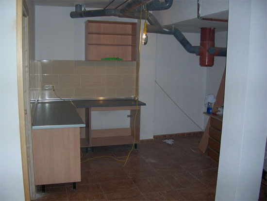
El primer paso será colocar dos ángulos
de hierro de 60 mm de anchura, que servirán de base para colocar el
techo del recinto. Los ángulos se encuentran anclados al muro de
contención de la casa y sobre dos pilares que se encuentran en la zona
frontal donde irá ubicado el alojamiento. Su colocación es bien fácil,
agujeros en los ángulos de hierro y pared, luego insertamos unos
tornillos suficientemente grandes como para anclar bien la estructura
de hierro. Yo he colocado tornillos de acero de un diámetro de 8 mm y
cabeza cuadrada. Los tacos que se insertan en la pared y pilares son
también de 8 mm.
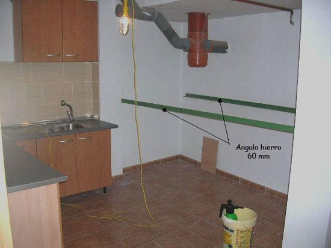
Una vez instalados los ángulos de
hierro, procedo a cubrir la pared frontal y lateral del recinto con
paneles de aglomerado marino. De esta manera se evita que la humedad
que proporciona estas paredes de hormigón afecten al recinto. También
serán un soporte espléndido para colocar el enchapado que deseemos
como fondo del alojamiento (azulejos imitación piedra, lascas de
pizarra, terracota, pintarlos al color deseado, etc). Los paneles de
aglomerado marino son colocados con tornillos y tacos de 8mm.
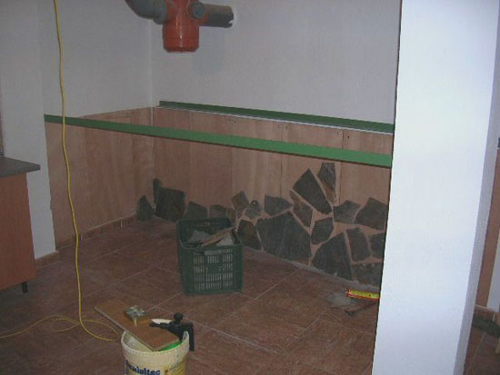
Sobre el aglomerado marino, en este
caso, colocamos lascas de pizarra que son fijadas a la madera con
masilla Sikaflex®, ideal para soportar humedad, altas temperaturas e
inclusive radiación ultravioleta. Las losetas de pizarra en un primer
momento se colocan sobre los paneles utilizando puntillas de acero
para fijarlas provisionalmente. En los ángulos y curvas de cada lasca
se clavan las puntillas en la madera para que queden fijas. Una vez
queden fijas, utilizamos la masilla para adherirlas, dejando las
puntas clavadas para soportar el peso de cada pieza de piedra y que no
se mueva mientas seca la masilla de poliuretano.
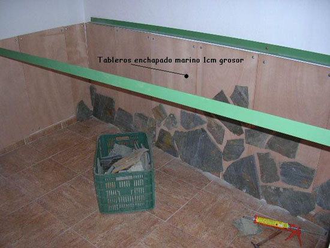
Una vez todas las piezas de piedra han
sido adheridas a los tableros de aglomerado marino, procedo a masillar
los huecos que quedan entre piedra y piedra. Para este paso utilizo
mortero de cemento, que tras diluirlo con agua, es introducido con
palustra/espátula en cada resquicio entre las piezas de piedra. Una
vez tapados todos los huecos, con una esponja mojada en agua se alisa
el producto para que quede todo estéticamente más uniforme.
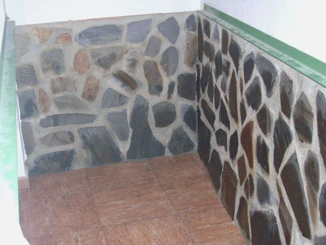
Tras realizar el enlucido de las
piedras, el aspecto final del fondo del alojamiento está terminado.
Este tipo de zócalo es muy utilizado en las casas alpujarreñas de la
sierra granadina, de ahí un poco la copia de este estilo. La
colocación de las lascas de pizarra es a gusto de cada uno, podemos
hacerlo anárquicamente, dejando siempre entre las losetas un espacio
más o menos de igual anchura.
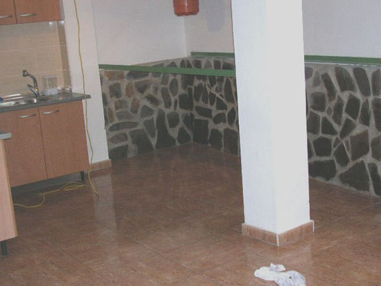
La pizarra es muy barata y la
encontramos en almacenes de construcción a un precio que no supera los
5/6 € metro cuadrado. Existen en estos almacenes distintos tipos de
piedra que pueden ser utilizadas de igual manera, el color puede
variar según su procedencia presentando tonos amarillos, granates,
etc.
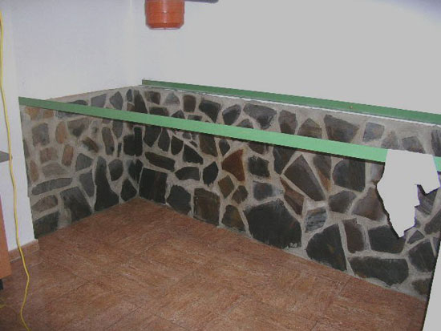
Una vez terminados los fondos, procedo a
levantar el tabique frontal. Este minitabique, que abarca toda la
anchura del recinto de pilar a pilar, servirá como base para instalar
las cristaleras correderas para ver bien a los animales. También
servirá para poder aportar la cantidad de substrato que deseemos y
para evitar que los animales puedan estar en contacto con los
cristales, previniendo roturas inoportunas, escapes u otras
incidencias. Como se puede observar en la imagen, utilizo ladrillo
visto en un tono rojizo colocado tumbado para así dotar de la anchura
deseada a la base donde irá ubicada la cristalera.
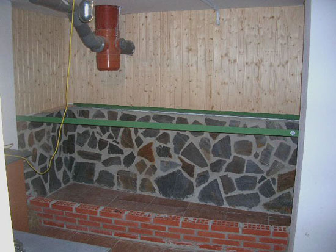
El tabique lateral, que une el muro de
carga con uno de los pilares frontales, también es realizado con
ladrillo visto. Este tabique tendrá la misma altura que el fondo de
piezas de piedra para así poder colocar el techo del recinto sobre los
ángulos de hierro.
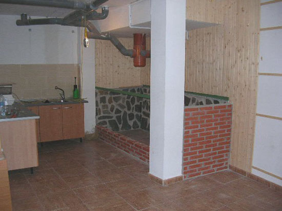
Se podría enlucir la parte interior del
muro lateral, de igual forma que colocamos las piezas de piedra en el
fondo del recinto, pero he optado por dejarlo con ladrillo visto ya
que la estética del alojamiento no queda mal.
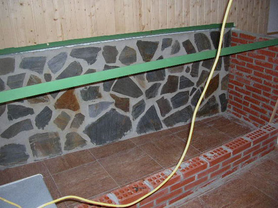
Sobre los ángulos de hierro, colocamos
piezas de madera de igual tamaño al fondo en cada sitio del
alojamiento. En este caso, he utilizado como madera para servir de
techo y estantería, una madera muy fuerte denominada tableros de
encofrado. Son tableros de tres capas utilizados por constructores
para realizar encofrados en obras. Son muy resistentes, incluso a la
humedad, ya que vienen tratados para aguantar los productos químicos
que suelta el hormigón o cemento al fraguarse. Se encuentran en
almacenes de construcción, o inclusive en almacenes de carpintería.
Sólo hay disponibles dos tamaños de largura (100 ó 200 cm.),
encontrándose siempre a la misma anchura (50 cm). Los tableros son
cortados a medida y puestos en batería abarcando la largura de la
estancia.
En el tabique frontal se colocan
azulejos con borde redondeado para enlucir la base donde irá colocada
la cristalera. Son azulejos de tono igual a los ladrillos y que se
encuentran en cualquier almacén de construcción. Su precio es ínfimo
debido a la cantidad que utilizaremos, en este caso unas doce unidades
a 0,50 € unidad.
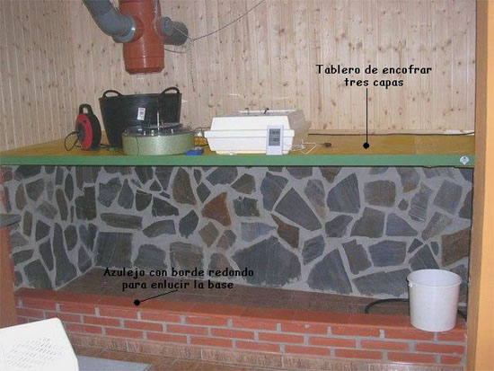
Una vez dispuesta la base del tabique
frontal, daremos paso a los profesionales en la carpintería metálica.
Nos presupuestarán el coste final de la cristalera, tras medir el
tamaño de la ventana. En este caso, he utilizado aluminio en color
bronce con ventanas de Climalit® (doble acristalamiento para evitar
pérdidas de calor). Los marcos de la cristalera son unidos al tabique
inferior, pilares laterales y ángulo de hierro con tornillos y tacos
del grosor que aconseja su instalador (en este caso 8 mm). La
cristalera nos permitirá observar sin ningún problema a los animales
que mantenemos en su interior, no dejando escapar el calor que tanto
gusta a Geochelone elegans y garantizando que la temperatura interior
no decaiga en la franja calorífica que deseemos proporcionar.
En este caso concreto, el tamaño final
del acristalamiento es de 255 cm de ancho por 80 cm de alto. Siendo el
coste final, con instalación incluida, de unos 400 €. Sólo se han
realizado dos ventanas para una mayor comodidad a la hora de manipular
a los animales, modificar el substrato, u otra tarea de mantenimiento
en su interior.
El suelo del recinto lo enchapo con
aglomerado marino, para evitar que el suelo cerámico de la estancia
proporcione una humedad o un frío innecesario. También evitaremos que
el suelo donde construyamos el recinto se estropee con las manchas
producidas por el substrato o la orina procedente de los animales
mantenidos.
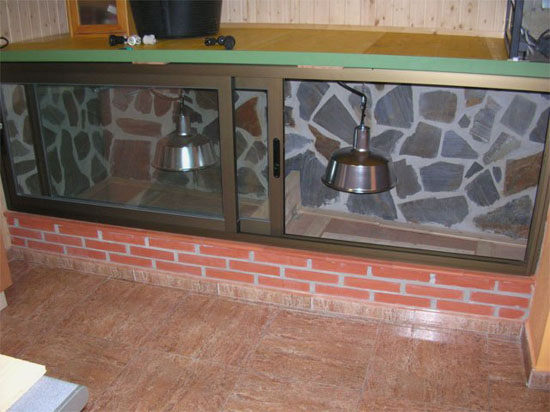
Una vez colocada la cristalera, se
procede a instalar las pantallas donde irán las lámparas de
soleamiento (en este caso Power Sun® de 160 watios). Usaremos una
pantalla de 50 cm de diámetro muy utilizada en cocinas. La pantalla ha
sido modificada con casquillo cerámico para evitar sobrecalentamiento.
También coloco, en la zona destinada a los refugios de los animales,
un plafón de la marca Zoomed®, de 22 cm de diámetro, para instalar una
cerámica que mantenga un calor agradable durante la noche en los meses
de invierno.
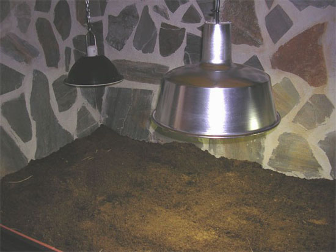
En la imagen inferior, podemos ver una
vista frontal del alojamiento con las lámparas de soleamiento
encendidas. El substrato ya ha sido introducido en el recinto y he
realizado una división del mismo para mantener Geochelone elegans de
distinta procedencia.
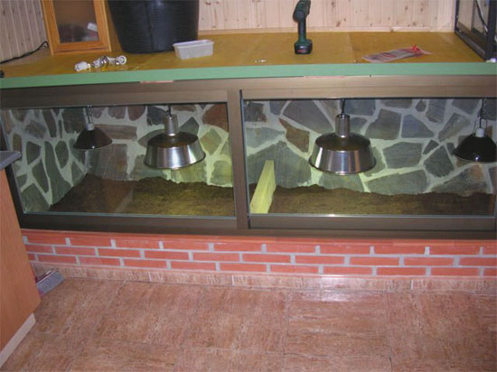
Los cables eléctricos, que proporcionan
energía a los plafones, son anclados en la madera en la parte superior
del recinto, siendo así más fácil su instalación. Los plafones se
encuentran colgados con una cadena para así encontrar la altura idónea
en el recinto (dependerá de la cantidad de substrato aportado). El
cableado utilizado es individual para cada plafón e irán conectados a
distintos controladores de tiempo para utilizar los fotoperíodos de
luz o calor que necesitemos. El cableado es de 2 mm por línea para
evitar sobrecalentamientos inoportunos.
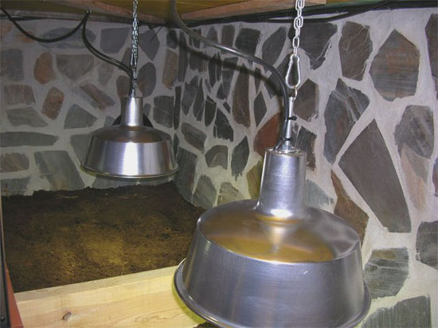
Durante algunos días se comprueban los
valores térmicos que se consiguen dentro del alojamiento para así
garantizar que su utilización sea la adecuada.
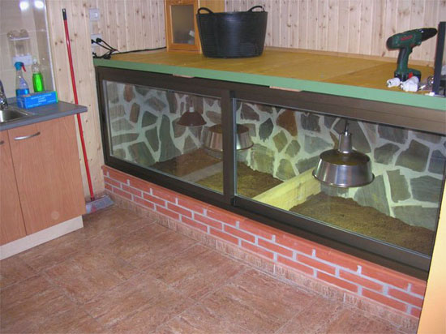
Visto que el funcionamiento del
alojamiento es el que deseamos, podemos incluir a los animales en su
nueva estancia. Aunque aún no ha sido puesta la vegetación, voy
adaptando mis estrelladas a su nuevo recinto y controlando los rangos
de temperatura y humedad que se alcanzan.
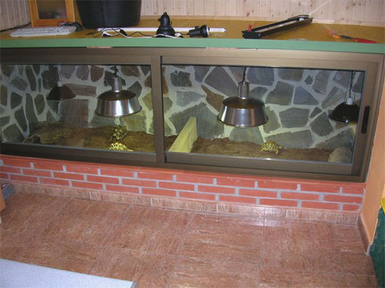
En la vista inferior, podemos observar
como queda uno de los dos recintos en los que he dividido el
alojamiento. Los animales en sus primeras horas toman posición de su
territorio, olfateando y curioseando toda la estancia.
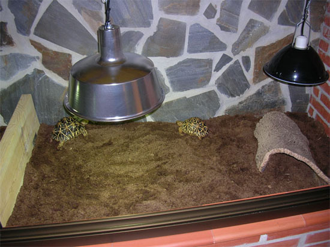
Queda por añadir la vegetación, algunas
piedras de mediano tamaño o cortezas de pino para darle al substrato
una dureza superficial adecuada. Es una mezcla de 1/5 de turba, 1/5 de
arena o sauló y 3/5 de tierra roja. La humedad en este substrato se
mantiene varios días, aún bajo el calor de las lámparas, evitando
tener que estar humedeciéndolo a diario.
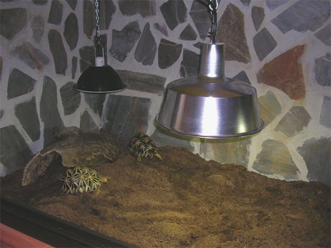
Vista final del alojamiento desde un
lateral, la cristalera se puede abrir o cerrar dependiendo de las
condiciones de temperatura interior o si deseamos renovar el aire del
recinto. El techo de la instalación será destinado a colocar terrarios
enfermería y de ejemplares recién nacidos.
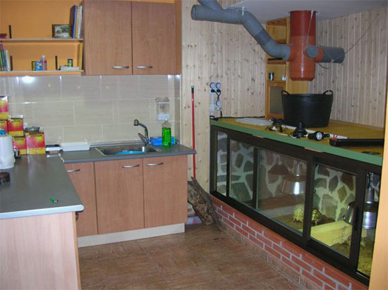
Este tipo de alojamientos, construyendo
el tabicado del fondo y lateral (no utilizado por mí ya que podía
utilizar las paredes de la habitación), puede ser perfectamente
montado y fácil de construir. La disposición de los ladrillos,
tumbados, la facilidad de construir con madera el techo y el montaje
de las cristaleras, garantizarán que el recinto podrá adaptarse al
mantenimiento de animales que necesiten de unas condiciones climáticas
más exigentes (en este caso Geochelone elegans).
El resultado final de la construcción,
nos da un recinto con una longitud total de 320cm por 80cm de altura.
El fondo de la estancia es de más de 115cm en la zona ancha del
alojamiento y de 100cm en la más estrecha.
Por último, en la parte izquierda de la
imagen, puede verse el resultado final de la instalación de una zona
con agua, encimeras y armarios, destinada a su uso exclusivo con los
animales, limpieza, hidratación, preparación de comida, almacenado de
sustrato, etc.
Espero que os resulte útil el artículo y
os pueda dar ideas para futuros alojamientos que tengáis que diseñar y
luego construir.
|